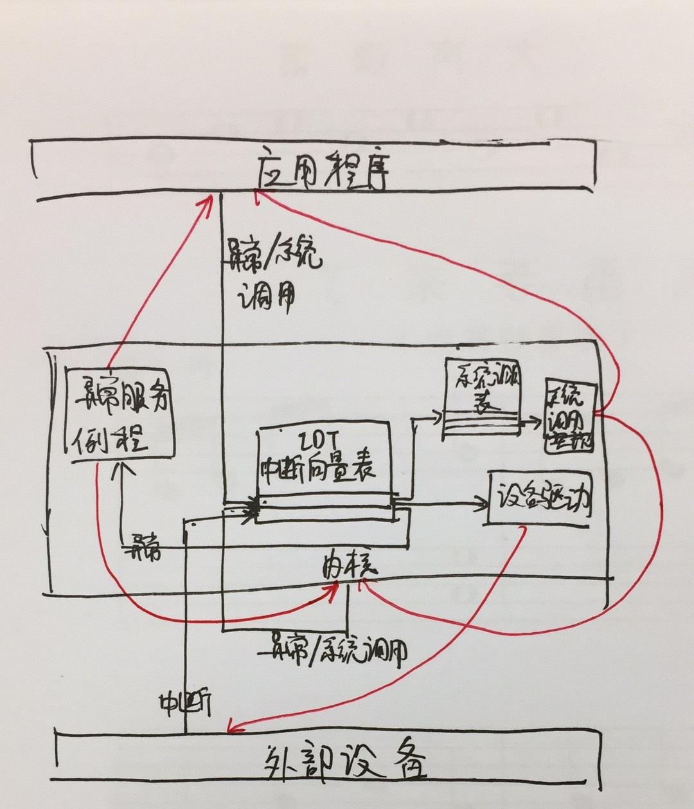
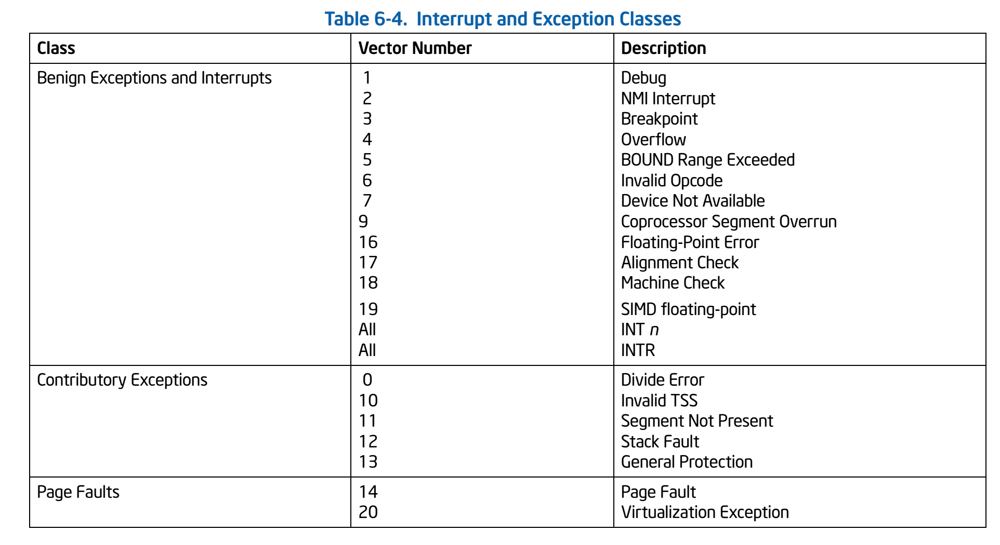
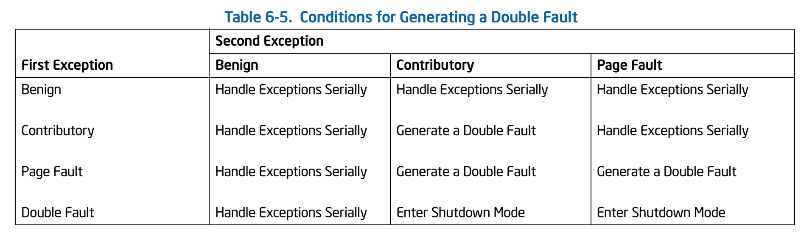

课程内容概述
这节课的主要内容包括：
- 系统启动过程
- BIOS的原理
- BIOS的一些具体工作
- 系统启动规范
- 中断，异常和系统调用
- 中断
- 系统调用
系统启动过程
BIOS的基本功能
计算机刚刚启动时的内存布局如图：
| 地址 | 用途 |
|---|---|
| (4GB - 64KB) ~ 4GB | 实际BIOS ROM |
| 1MB ~ (4GB - 64KB) | 空闲空间 |
| 640KB ~ 1MB | 视频内存，BIOS启动固件（映射） |
| 0 ~ 640KB | 空闲空间 |
（这是一个非常简略的示意图，具体请见Memory Map (x86)）
这一复杂的映射机制是为了保证向后兼容而设计的。在8086时代，内存只有1MB大小，此时，BIOS的代码固化在EPROM中，且EPROM被编址在1MB内存地址空间的最高64KB中。PC加电后，CS寄存器初始化为0xF000，IP寄存器初始化为0xFFF0，所以CPU要执行的第一条指令的地址为
CS:IP=0xF000:0XFFF0（ Segment:Offset表示） =0xFFFF0（ Linear表示） 。这个地址位于被固化的EPROM中，该地址存储了一条指令，它是一个长跳转指令JMP F000:E05B。这样就开启了BIOS的执行过程。
到了32位的80386 CPU时代，内存空间扩大到了4G，多了段机制和页机制。如果仍然把BIOS启动固件编址在0xF0000起始的64KB内存地址空间内，就会把整个物理内存地址空间隔离成不连续的两段，一段是0xF0000以前的地址，一段是1MB以后的地址，这很不协调。为此，intel采用了一个折中的方案：默认将执行BIOS ROM编址在32位内存地址空间的最高端，即位于4GB地址的最后一个64KB内。在PC系统开机复位时，CPU进入实模式，并将CS寄存器设置成0xF000，将它的shadow register的Base值初始化设置为0xFFFF0000，EIP寄存器初始化设置为0x0000FFF0。所以机器执行的第一条指令的物理地址是0xFFFFFFF0。80386的BIOS代码也要和以前8086的BIOS代码兼容，故地址0xFFFFFFF0处的指令还是一条长跳转指令
jmp F000:E05B。注意，这个长跳转指令会更新CS寄存器和它的shadowregister，即执行jmp F000:E05B后，CS将被更新成0xF000。表面上看CS其实没有变化，但CS的shadow register被更新为另外一个值了，它的Base域被更新成0x000F0000，此时形成的物理地址为Base+EIP=0x000FE05B，这就是CPU执行的第二条指令的地址。此时这条指令的地址已经是1M以内了，且此地址不再位于BIOS ROM中，而是位于RAM空间中。由于Intel设计了一种映射机制，将内存高端的BIOS ROM映射到1MB以内的RAM空间里，并且可以使这一段被映射的RAM空间具有与ROM类似的只读属性。所以PC机启动时将开启这种映射机制，让4GB地址空间的最高一个64KB的内容等同于1MB地址空间的最高一个64K的内容，从而使得执行了长跳转指令后，其实是回到了早期的8086 CPU初始化控制流，保证了向下兼容。
上述说明指出，在CPU启动之后，它处于实模式之下，执行的第一条指令是jmp F000:E05B，跳转到BIOS程序中。此时，PC = 16*CS + IP，系统地址空间只有20位（1MB）。
• 20位地址空间：1MB
这之后BIOS会进行以下工作：
- 在实模式下提供基本输入输出方法
- 通过中断调用实现
- 只能在实模式下使用，操作系统不能使用
- 运行自检程序
- 用户选择引导设备（从什么介质启动）
- 将bootloader从磁盘的引导扇区加载到内存中
0x7c00开始的位置 - 跳转到bootloader的位置：
CS:IP=0000:7c00
• 系统设置信息：
• 开机后自检程序
• 系统自启动程序等
这之后，控制权就交给bootloader：
- 切换到保护模式
- 将操作系统的代码和数据从硬盘加载到内存中（因为BIOS无法处理硬盘的文件系统）
- 跳转到操作系统的起始地址
加载之后的内存布局如下表：
| 地址 | 用途 |
|---|---|
| (4GB - 64KB) ~ 4GB | 实际BIOS ROM |
| ? ~ (4GB - 64KB) | 空闲空间 |
| 1MB ~ ? | 操作系统 |
| 640KB ~ 1MB | 视频内存，BIOS启动固件（映射） |
| ? ~ 640KB | 空闲空间 |
| 0x7c00 ~ ? | bootloader |
| 0 ~ 0x7c00 | BIOS数据 |
最后，bootloader把控制权转交给操作系统。
BIOS的一些具体工作
上面这些听起来都很不错，但是课程中还涉及了很多烦人的细节。姑且摘录如下：
BIOS本身的初始化内容
包括：
- 硬件自检POST
- 检测系统中内存和显卡等关键部件的存在和工作状态
- 查找并执行显卡等接口卡BIOS，进行设备初始化
- 执行系统BIOS，进行系统检测：检测和配置系统中安装的即插即用设备
- 更新CMOS中的扩展系统配置数据ESCD
- 按指定启动顺序从硬盘、软盘等设备启动
BIOS如何读取bootloader
Wiki上是这么说的：
- 系统开机或者重启。
- BIOS加电（台湾用语：开机）自检（Power On Self Test – POST）。BIOS执行内存地址为FFFF:0000H处的跳转指令，跳转到固化在ROM中的自检程序处，对系统硬件（包括内存）进行检查。
- 读取主引导记录（MBR）。当BIOS检查到硬件正常并与CMOS中的设置相符后，按照CMOS中对启动设备的设置顺序检测可用的启动设备。BIOS将相应启动设备的第一个扇区（也就是MBR扇区）读入内存地址为0000:7C00H处。
- 检查0000:7DFEH-0000:7DFFH（MBR的结束标志位）是否等于55AAH，若不等于则转去尝试其他启动设备，如果没有启动设备满足要求则显示"NO ROM BASIC"然后死机。
- 当检测到有启动设备满足要求后，BIOS将控制权交给相应启动设备。启动设备的MBR将自己复制到0000:0600H处，然后继续执行。
根据MBR中的引导代码启动引导程序。
- 事实上，BIOS不仅检查0000:7DFEH-0000:7DFFH（MBR的结束标志位）是否等于55AAH，往往还对磁盘是否有写保护、主引导扇区中是否存在活动分区等进行检查。如果发现磁盘有写保护，则显示磁盘写保护出错信息；如果发现磁盘中不存在活动分区，则显示类似如下的信息“Remove disk or other media Press any key to restart”。
我觉得这个wiki讲得十分清楚，所以就不摘录课件内容了。
标准MBR的结构如下：
| 地址（十进制） | 描述 | 长度（字节） |
|---|---|---|
| 0 | 代码区 | 440（最大446） |
| 440 | 选用磁盘标志 | 4 |
| 444 | 一般为空值; 0x0000 | 2 |
| 446 | 标准MBR分区表规划（四个16 byte的主分区表入口） | 64 |
| 510 | MBR有效标志：0x55AA | 2 |
系统启动规范
课程中还讲到了BIOS-MBR、BIOS-GPT、PXE和UEFI等系统启动规范，其中UEFI似乎还更重要一点。这似乎是通用的现代BIOS标准。
中断、异常和系统调用
首先下个定义：
- 系统调用（system call）：应用程序主动向操作系统发出的服务请求
- 异常（exception）：非法指令或其他原因导致当前指令执行失败（如：内存出错）后的处理请求
- 中断（hardware interrupt）：来自硬件设备的处理请求
它们的相同之处是，采用的处理方式大致相同。无论是发生异常、中断，还是系统调用，都需要由硬件保存现场和中断号，转到内核态，进入中断向量表，查找对应的设备驱动程序地址（异常）、异常服务例程地址（异常），或找到系统调用表，并在其中查找对应的系统调用实现的起始地址。处理完毕之后，再进行现场的切换，回到用户态继续执行程序（如果可以继续的话）。

它们的区别如下表：
| 源头 | 响应方式 | 处理机制 | |
|---|---|---|---|
| 中断 | 外设 | 异步 | 持续，对用户应用程序是透明的 |
| 异常 | 应用程序或内核意想不到的行为 | 同步 | 杀死或重新执行意想不到的应用程序指令 |
| 系统调用 | 应用程序请求操作提供服务 | 异步或同步 | 等待和持续 |
这三者的处理有时可以嵌套，有时不可以。Intel手册中把中断、异常和系统调用分为Benign、Contributry和Page Fault三类：

其中8号异常没有列在分类中，因为它是就是Double Fault的中断号。当嵌套中断/异常发生时，根据种类的不同，处理方式也有所不同：

从中可以了解很多有趣的事实。比如，硬件中断“Device Not Available”和系统调用都属于Benign类，因此它们可以和任何其他中断/异常进行嵌套；而Page Fault就不可嵌套（很有道理；如果连缺页服务例程自己都缺页了，那根本就没法解决）。
（以上内容也参考了Double Fault & Triple Fault一文）
相比于用户态的函数调用，中断和异常的开销是比较大的，因为它们需要进行：
- 特权级的切换
- 建立内核堆栈
- 验证参数的合法性（防止对内核的恶意攻击）
- 内核态需要映射到用户态的地址空间（因为需要访问用户程序的一些内容），因此需要更新页面映射权限
- 内核态也拥有独立的地址空间，因此TLB会失效
中断的具体处理机制
中断处理的过程需要软件和硬件的配合（虽然系统调用和异常也是……）
硬件处理内容包括：
- 在CPU初始化时设置中断使能标志
- 依据内部或外部事件设置中断标志
- 依据中断向量调用对应的中断服务例程
软件处理内容包括： - 现场保存（编译器）
- 中断服务处理（服务例程）
- 清除中断标记（服务例程）（系统调用只占用一个中断向量，另有系统调用表）
- 现场恢复（编译器）
系统调用
系统调用的特点
- 系统调用是操作系统服务的编程接口
- 通常由高级语言编写（C或C++）
- 程序访问系统调用通常是通过高层次的API接口（比如封装到标准C库—）而不是直接进行系统调用
- 3种最常用的应用程序编程接口（API）：
- Win32 API：Windows
- POSIX API：UNIX、LINUX、Mac OS X
- Java API：用于JAVA虚拟机（JVM），是对实际系统调用的进一步抽象
系统调用的实现
- 每个系统调用对应一个系统调用号
- 系统调用接口根据系统调用号来维护表的索引
- 系统调用接口调用内核态中的系统调用功能实现，并返回系统调用的状态和结果
- 用户不需要知道系统调用的实现
- 需要设置调用参数和获取返回结果
- 操作系统接口的细节大部分都隐藏在应用编程接口后
- 通过运行程序支持的库来管理
注意，系统调用时，堆栈需要切换（内核和用户程序使用的是不同的堆栈），特权级需要进行转换。
uCore中系统调用的具体实现
以read(fd, buffer, length)的实现为例：
- 用
vectors.S中的内容填充IDT表 - 发生系统调用时，硬件访问IDT表后，跳转到中断服务例程，对中断进行具体处理
kern/trap/trapentry.S:alltraps()：中断服务例程kern/trap/trap.c:trap()：针对中断类型进行具体处理tf->trapno == T_SYSCALL：中断类型为系统调用，调用具体的系统调用处理函数
kern/syscall/syscall.c:syscall()：进行系统调用tf->tf_regs.reg_eax == SYS_read：读eax（系统调用编号），得到具体是哪个系统调用
kern/syscall/syscall.c:sys_read()：处理SYS_READ系统调用，从tf->sp获取堆栈中的参数（fd,buf,length）kern/fs/sysfile.c:sysfile_read()：SYS_READ系统调用的更具体实现，读取文件，直接操纵驱动程序kern/trap/trapentry.S:trapret()：中断处理返回，将所需内容返回给用户态
习题
简答题
BIOS从磁盘读入的第一个扇区是是什么内容？为什么没有直接读入操作系统内核映像？
BIOS完成硬件初始化和自检后，会根据CMOS中设置的启动顺序启动相应的设备，这里假定按顺序系统要启动硬盘。但此时，文件系统并没有建立，BIOS也不知道硬盘里存放的是什么，所以BIOS是无法直接启动操作系统。另外一个硬盘可以有多个分区，每个分区都有可能包括一个不同的操作系统，BIOS也无从判断应该从哪个分区启动，所以对待硬盘，所有的BIOS都是读取硬盘的0磁头、0柱面、1扇区的内容，然后把控制权交给这里面的MBR (Main Boot Record）。
我认为上述答案并不十分确切。比如，在uCore中，虽然BIOS没有建立文件系统，bootloader也没有建立文件系统啊。但是，加载操作系统是个很复杂的过程：就比如uCore，我们需要完成对ELF文件格式的解析和文件本身的读入。BIOS工作在实模式，本身访存范围只有1MB（能使用的数据只有0 ~ 0x7c00的范围），而且代码长度被限制在64KB。为了将OS读入到高地址的内存中，需要BIOS进行模式的切换。但是，如果BIOS进行了实模式到保护模式的切换，就不能实现向后兼容了。而且不同的OS的文件格式和处理方法也有差异，这会导致BIOS十分复杂。因此，让OS提供自己的启动程序是最好的选择。
比较UEFI和BIOS的区别。
统一可扩展固件接口 (Unified Extensible Firmware Interface, UEFI) 是一种个人电脑系统规格，用来定义操作系统与系统固件之间的软件界面，作为BIOS的替代方案。
UEFI启动对比BIOS启动的优势有三点：
- 安全性更强：UEFI启动需要一个独立的分区，它将系统启动文件和操作系统本身隔离，可以更好的保护系统的启动；
- 启动配置更灵活：EFI启动和GRUB启动类似，在启动的时候可以调用EFIShell，在此可以加载指定硬件驱动，选择启动文件。比如默认启动失败，在EFIShell加载U盘上的启动文件继续启动系统；
- 支持容量更大：传统的BIOS启动由于MBR的限制，默认是无法引导超过2TB以上的硬盘的。随着硬盘价格的不断走低，2TB以上的硬盘会逐渐普及，因此UEFI启动也是今后主流的启动方式。
分区引导扇区的结束标志是什么？
0X55AA。当然，上面也说到了，BIOS除此之外还会检查别的内容。
在UEFI中的可信启动有什么作用？
通过启动前的数字签名检查来保证启动介质的安全性。
什么是中断、异常和系统调用？
- 中断：外部意外的响应；
- 异常：指令执行意外的响应；
- 系统调用：系统调用指令的响应。
这个回答真是十分简洁明了。
中断、异常和系统调用的处理流程有什么异同？
- 相同点：都会进入异常服务例程，切换为内核态。
- 不同点：
- 源头不同，中断源是外部设备，异常和系统调用源是应用程序；
- 响应方式不同，中断是异步的，异常是同步的，系统调用异步和同步都可以。
- 处理机制不同，中断对用户程序是透明的，异常会重新执行用户指令或杀死用户进程，系统调用一般是用户程序调用的
以ucore lab8的answer为例，uCore的系统调用有哪些？大致的功能分类有哪些？
打开kern/syscall/syscall.c，其中定义了如下内容：
1 | static int (*syscalls[])(uint32_t arg[]) = { |
大致可以分为如下4类：
- 进程管理：包括 fork/exit/wait/exec/yield/kill/getpid/sleep
- 文件操作：包括 open/close/read/write/seek/fstat/fsync/getcwd/getdirentry/dup
- 内存管理：pgdir命令
- 外设输出：putc命令
通过分析lab1_ex0了解Linux应用的系统调用编写和含义。(仅实践，不用回答)
按说是应该做一下的，但现在没有时间了……
通过调试lab1_ex1了解Linux应用的系统调用执行过程。(仅实践，不用回答)
按说是应该做一下的，但现在没有时间了……+1
基于实验八的代码分析ucore的系统调用实现，说明指定系统调用的参数和返回值的传递方式和存放位置信息，以及内核中的系统调用功能实现函数。
在ucore中，执行系统调用前，需要将系统调用的参数储存在寄存器中。 eax表示系统调用类型，其余参数依次存在 edx, ecx, ebx, edi, esi 中。
1 | ... |
说实话，我不知道这个题目在问什么。姑且把lab5 report中的说法粘贴过来：
fork/wait/exit系统调用的执行过程，以fork为例：
- 应用态进程调用
user/libs/ulib.c:fork函数 user/libs/ulib.c:fork调用user/libs/syscall.c:sys_fork函数user/libs/syscall.c:sys_fork函数调用user/libs/syscall.c:syscall函数，保存好相应的中断号和参数，引发系统调用中断vectors.S:vector128：系统调用对应的中断向量trapentry.S:__alltraps：进入中断处理例程trap.c:traptrap.c:trap_dispatch：进入系统中断的具体处理例程kern/syscall/syscall.c:syscall：根据%eax寄存器中保存的值，进入sys_fork函数处理SYS_fork这一具体系统调用kern/syscall/syscall.c:sys_fork：调用do_fork函数proc.c:do_fork
以ucore lab8的answer为例，分析ucore应用的系统调用编写和含义。
1 | syscall(int num, ...) { |
这段代码是用户态的syscall函数，其中num参数为系统调用号，该函数将参数准备好后，通过SYSCALL汇编指令进行系统调用，进入内核态，返回值放在eax寄存器，传入参数通过eax~esi依次传递进去。在内核态中，首先进入trap()函数，然后调用 trap_dispatch()进入中断分发，当系统得知该中断为系统调用后，OS调用如下的syscall函数：
1 | void |
该函数得到系统调用号num = tf->tf_regs.reg_eax;，通过计算快速跳转到相应的sys_开头的函数，最终在内核态中，完成系统调用所需要的功能。
以ucore lab8的answer为例，尝试修改并运行ucore OS kernel代码，使其具有类似Linux应用工具strace的功能，即能够显示出应用程序发出的系统调用，从而可以分析ucore应用的系统调用执行过程。
利用trap.c的trap_in_kernel()函数判断是否是用户态的系统调用，调用syscall()时传入此参数
1 | case T_SYSCALL: |
更改syscall()的函数原型为void syscall(bool);；
之后在syscall(bool)中加入输出即可：
1 | int num = tf->tf_regs.reg_eax; |
下面是qemu运行的输出结果片段，可以看出在用户程序输出前调用了SYS_open，输出sh is running的过程中调用了SYS_write。
1 | Iter 1, No.0 philosopher_sema is thinking |
系统调用与函数调用的区别是什么？
- 汇编指令的区别
- 系统调用：使用INT和IRET指令
- 函数调用：使用CALL和RET指令
- 安全性的区别
- 系统调用有堆栈和特权级的转换过程，函数调用没有这样的过程，系统调用相对更为安全
- 性能的区别
- 时间角度：系统调用比函数调用要做更多和特权级切换的工作，所以需要更多的时间开销
- 空间角度：在一些情况下，如果函数调用采用静态编译，往往需要大量的空间开销，此时系统调用更具有优势
通过分析int、iret、call和ret的指令准确功能和调用代码，比较函数调用与系统调用的堆栈操作有什么不同？
int指令压栈的内容请参考Interrupt and Exception Handling on the x86第10页。
实践练习
看不完了==